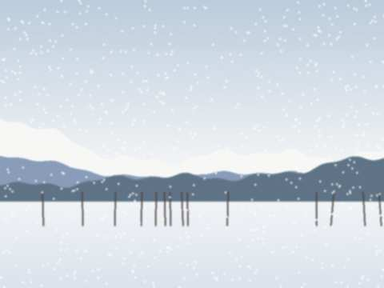

12 October 2014 This was my last trip. I wrote on the bus from my phone, in the dark, on the last night at the border. The boy from the next bus is playing the komuz again, a different boy.
I decided in the market in Urumqi when the girl with the chargers asked, "Mama Talas, next time?" and I said nothing. I put the covers on the table, 300 as usual, and I did not count them.
The stall is Nurzat's from 1 November. Stall 114, row 6, Bazar-i Kalan. She has my phone book, my girl in Urumqi and Almaz's number. I keep the tea. I will sit at the stall two days a week, to look at her bargain.
Thank you for reading. If you see an old woman in Talas with special socks, say hello, it is probably me. 8 June 2014 I counted the books for the six years. In total I went 31 times, about 700 kilos each trip with the lorry, 4 lorry drivers, 22 bus companies (I changed when they got rude), 3 robberies attempted, 1 successful. I paid the border: 11,000 dollars. I paid the family: more. My feet: priceless, but they asked.
I will not write a conclusion yet. 15 March 2014 Nurzat (my niece, 22 now) finished the courses in accountancy in Talas. She does not want to be an accountant. She wants to sell. She says "I do not want to sit, I want to move". I said: I know. I said: watch the knees.
She came with me in March. First trip: sick on the bus, sick at the border, happy at the market. At the stall in Urumqi she bargained with the girl for a belt, 17 yuan down to 12, and the girl clapped her hands and said "Talas girl!" I felt a cold feeling in my stomach, the good one. 3 December 2013 The bus left Urumqi at 6 in the evening. At 3 in the morning there was snow, big and quiet. At 8 the bus stopped: the road was closed at the pass, a lorry across the road. We waited. A man from Almaty shared his tea, I shared my bread, and a woman with a baby slept on my shoulder for five hours. I did not mind.
We reached the border at midnight the next day. We were a day late and my stall was closed for two days. No one died. Everybody waited. This is the whole lesson of the road.
 The bus at the pass at 8 a.m., the road behind us white.19 September 2013 Urumqi in September 2013 is not Urumqi in 2008. Everything +40%. The girl with the chargers has a shop of her own with a glass door, and a boy who carries her boxes. She remembered me: "Mama Talas!" and gave me the old price on the first order. The second order was the new price.
The cardboard prices in the market are now in Chinese, Uyghur and Russian only. They dropped English, nobody comes. The yuan is stronger and my margin is thinner. I need to sell more or travel less. I know what the doctor says. |